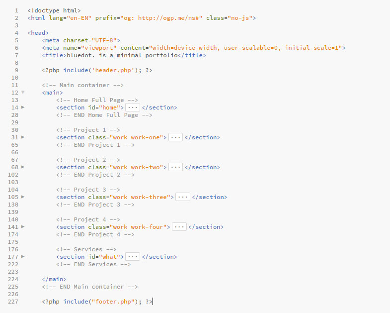

Documentation
You will find here what you need to know about bluedot. minimal portfolio HTML template.
Features
Check out some of the features we have in this template.
- Fully responsive
- Minimal portfolio, easy to use and easy to customize
- Clear design
- Clean code well organised, commented
- Template well structured (header, main, footer...)
- Powered with Bootstrap V4 grid
- SASS files included
- Smooth animation
- Google Fonts
Tree file
assets
The place to put your logo, favicon, icon and template images
css
All css files, included bootstrap
docs
This documentation
images
Your projects images
js
Custom script in bluedot.js and required JS
src
Source .scss (SASS)
/
Templates HTML files (structured with PHP)
HTML Structure
Index structure

Changelog
Version 1.0 - October 10, 2017
Initial release of the bluedot. template.